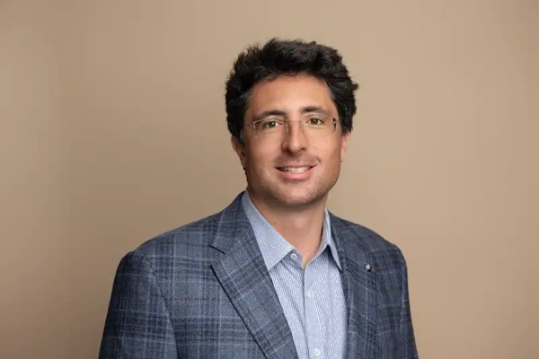

LAB ─ IONQ概要 ─ 01/34
IONQIONQ ─ FRONTIER LAB 企業資料 イオン方式の量子コンピュータから、通信・センサーまで
量子計算と関連技術を商用化する会社。IonQの売上はこの2年で桁が変わっていて、量子が研究テーマから売上の立つ事業になった最初の例の一つです。
売上（2026年7-9月期）
1億7,383万1,000ドル
前年同期3,986万6,000ドルから336%増
6四半期連続で過去最高を更新した四半期売上です。ただし増分の半分近くは買収したSkyWaterの受託製造で、本業の量子事業の伸びとは分けて読む必要があります。
2026年7-9月期／IonQ 2026年第3四半期決算発表（SEC 8-K Exhibit 99.1、2026年11月5日）
IonQ Platform売上（2026年7-9月期）
9,030万ドル
前年同期比127%増
量子コンピュータ本体・通信・センサー・セキュリティを束ねた本業部門の売上です。Tempoの世界各地への納入が伸びを引っ張りました。
2026年7-9月期／IonQ 2026年第3四半期決算発表（SEC 8-K Exhibit 99.1、2026年11月5日）
SkyWater Foundry Services売上（2026年7-9月期）
8,350万ドル
2026年7月31日の買収完了後に初めて連結した部門で、前年同期の比較対象なし
半導体受託製造の売上です。四半期売上の48.0%を占め、IonQの売上構造が量子専業から製造業を含む形へ変わったことを示します。
2026年7-9月期／IonQ 2026年第3四半期決算発表（SEC 8-K Exhibit 99.1、2026年11月5日）
調整後EBITDA（2026年7-9月期）
1億3,360万8,000ドルの損失
前年同期4,891万1,000ドルの損失から赤字幅が拡大
売上336%増の裏で調整後赤字も前年同期の2.7倍に広がりました。僕が見たいのは成長率より先に、この赤字幅が縮み始める四半期がいつ来るかです。
2026年7-9月期／IonQ 2026年第3四半期決算発表（SEC 8-K Exhibit 99.1、2026年11月5日）の非GAAP調整表
全文を無料公開中 ─ 全34スライドを掲載しています
出典：KPIの出典は各指標の下に記載。数字は各社の決算資料による
LAB ─ IONQ目次 ─ 02/34
CONTENTS
この資料の地図 章の見出しだけを追えば、この会社の今の姿が分かります。
01 概要 論点と事業の形、直近の四半期
02 成長の変遷 売上の推移と会社の沿革
03 テーマ詳解 8つのテーマを1枚ずつ読む
04 エコシステム 提携と買収の相手
05 CEOと製品 経営者の軸と製品の一覧
06 競合比較 弱点と次の決算で見る数字
07 動画・用語 柏原の解説動画と基本の言葉
LAB ─ IONQ概要 ─ 03/34
FOCUS
今の論点は3つ 判定は次の決算で行う。
1
336%増の伸びは買収か本業か
直近の売上は1億7,380万ドルで前年比336%増。IonQ Platformの売上は9,030万ドルで127%増。買収で買った売上と、本業の伸びを分けて見る。
IonQ Platformの売上と、受注残
2
通期見通し5億ドルへ届くか
2026年通期の売上見通しは5億500万〜5億1,500万ドル。2025年度の1億3,002万ドルから桁が変わる計画で、四半期ごとの進み具合がすべてになる。
四半期売上と、通期見通しの修正の有無
3
赤字と買収の重さは増えていないか
調整後EBITDAは1億3,360万ドルの損失。買収を重ねるほど のれん が膨らみ、技術の進み具合に対して費用が先行する構造。
調整後EBITDAの損失幅と、買収関連の開示
LAB ─ IONQ概要 ─ 04/34
MAP
IonQの8つのテーマ 8つのテーマで全体像を組み立てる。
01 イオン方式の量子コンピュータから、通信・センサーまで 1億3,002万ドル（約200億円）
02 国防・研究機関・データセンターが買い手 3,300万ドル（約50億8,200万円）
03 TempoとSuperion 256、そして工場 9,030万ドル（約139億円、前年比127%増）
04 機械の納入と工場の受託で売上が立つ 1億7,380万ドル（約268億円、前年比336%増）
05 競合にも部品を売る「量子の工場」 8,350万ドル（約129億円、四半期売上の48.0%）
06 イオン方式で唯一、DARPAの最終段階へ 最大3億ドル（約462億円）
07 赤字の拡大と、のれんの重さ 1億3,360万ドル（約206億円、損失）
08 本業の伸び、受注残、赤字の幅 9,030万ドル（約139億円、前年比127%増）
LAB ─ IONQ概要 ─ 05/34
MODEL
お金の流れと、製品 量子システム、計算アクセス、研究・開発等の契約。事業別の最新内訳はIRで確認。
イオントラップ方式の量子コンピューター
量子ネットワーク
量子センシング・セキュリティ
LAB ─ IONQ概要 ─ 06/34
LATEST QUARTER
直近の四半期 ─ 統一した物差しで見る IonQの売上は量子コンピュータの納入・クラウド利用・センサーや通信機器の販売と、工場の受託製造から立ちます。
売上（2026年7-9月期）
1億7,383万1,000ドル
前年同期3,986万6,000ドルから336%増 ─ 6四半期連続で過去最高を更新した四半期売上です。ただし増分の半分近くは買収したSkyWaterの受託製造で、本業の量子事業の伸びとは分けて読む必要があります。
IonQ Platform売上（2026年7-9月期）
9,030万ドル
前年同期比127%増 ─ 量子コンピュータ本体・通信・センサー・セキュリティを束ねた本業部門の売上です。Tempoの世界各地への納入が伸びを引っ張りました。
SkyWater Foundry Services売上（2026年7-9月期）
8,350万ドル
2026年7月31日の買収完了後に初めて連結した部門で、前年同期の比較対象なし ─ 半導体受託製造の売上です。四半期売上の48.0%を占め、IonQの売上構造が量子専業から製造業を含む形へ変わったことを示します。
調整後EBITDA（2026年7-9月期）
1億3,360万8,000ドルの損失
前年同期4,891万1,000ドルの損失から赤字幅が拡大 ─ 売上336%増の裏で調整後赤字も前年同期の2.7倍に広がりました。僕が見たいのは成長率より先に、この赤字幅が縮み始める四半期がいつ来るかです。
四半期の要点 ─ 営業損失4億3,307万ドルは売上の2.5倍です。純利益の黒字はワラントの評価益8億9,616万ドルによるもので、本業の黒字化を示しません。売上1億7,380万ドルの伸びと費用の伸びを分けて読まないと、黒字という見出しだけが先行します。
出典：2026年7〜9月期、IonQ 2026年第3四半期 決算発表（SEC 8-K、2026年11月5日）より。
LAB ─ IONQ成長の変遷 ─ 07/34
REVENUE
売上は2019年から2025年で650.1倍 直近の年度は1.30億ドル、前年比+202%。
4,805万ドル 9,611万ドル 1.46億ドル 2019 2020 2021 2022 2023 2024 2025 20万ドル 1.30億ドル 注記 ─ 2020年：GAAP売上高ゼロは実績値。顧客に発行したワラントの費用を売上から控除した影響を含む。欠損や受注額ゼロを意味しない。
2019〜2020年 ─ 転換点
売上が初めて立った時期で、金額はまだ小さく、2019年の売上20万ドルは単一の顧客からでした。2020年のGAAP売上は0ドルです。事業が止まったのではなく、2019年11月に顧客のAmazonへ発行したワラントが理由です。発行時の公正価値870万ドルのワラントは顧客への対価として売上から差し引く処理で、2020年は権利が確定した56万6,000ドル分のうち3万8,000ドルを売上の控除として計上しました。同年末時点で履行義務残高は約370万ドルあり、受注自体は残っていました。
2021年10月 ─ 転換点
SPACのdMY Technology Group IIIとの合併が2021年9月30日に完了し、総額6億3,600万ドルの調達を得て、10月1日にNYSEへ上場しました。2021年の売上は209万9,000ドル、受注額は1,670万ドルでした。翌2022年の売上は1,113万1,000ドルへ5.3倍になりました。内訳はプラットフォームとコンサルティングが1,089万2,000ドル、専用ハードウェアは23万9,000ドルです。この時期の伸びは機械の販売ではなく、クラウド経由の利用と共同開発のサービスが作りました。
2023〜2025年 ─ 転換点
Forteの商用提供を2023年6月に広げたあと、売上の中心はサービスから機械の構築へ移りました。専用ハードウェアの売上は2023年の708万3,000ドルから2024年に2,159万4,000ドル、2025年に6,994万6,000ドルへ増えました。全社売上は2,204万2,000ドル、4,307万3,000ドル、1億3,001万6,000ドルと3年で5.9倍です。2025年末の履行義務残高は約3億7,000万ドルまで積み上がりました。ただし2025年の増分には同年中の買収で得た売上も含まれます。本業のハードウェアの伸びとは分けて読む必要があります。
出典：12月31日決算。2025年度（2025年1〜12月）まで。SkyWater（2026年7月買収完了）は含まない。
LAB ─ IONQ成長の変遷 ─ 08/34
REVENUE DETAIL
年度ごとの売上と伸び グラフと同じ数字を年度ごとに前年比つきで並べます。
2020年
0ドル売上ゼロ（ワラント控除の影響を含む）
出典：12月31日決算。2025年度（2025年1〜12月）まで。SkyWater（2026年7月買収完了）は含まない。
LAB ─ IONQ成長の変遷 ─ 09/34
HISTORY
いまの形ができた転機 創業から直近までの転機を一次情報の発表日で並べます。
2015
研究から会社へ
Chris MonroeとJungsang Kimが設立し、イオントラップの研究成果を事業にしました。
2021
NYSEに上場
10月1日にIONQとして取引が始まりました。SPACとの合併で成長の資金を得ています。
2023
Forteの商用提供を拡大
6月22日に限定提供から世界の顧客向けの商用アクセスへ広げました。
2025
量子を使う計算化学を共同実証
AstraZeneca・AWS・NVIDIAと、量子を組み込んだ計算化学の手順を共同で実証しました。
出典：各社の公式発表・年次報告書による
LAB ─ IONQ成長の変遷 ─ 10/34
NUMBERS
いまの数字 各テーマの先頭の数字を並べた。
2025年度の売上 ─ イオン方式の量子コンピュータから、通信・セン
1億3,002万ドル（約200億円）
SDT ─ 国防・研究機関・データセンターが買い手
3,300万ドル（約50億8,200万円）
IonQ Platformの売上 ─ TempoとSuperion 256、そして
9,030万ドル（約139億円、前年比127%増）
売上 ─ 機械の納入と工場の受託で売上が立つ
1億7,380万ドル（約268億円、前年比336%増）
SkyWater Foundry Servicesの売上 ─ 競合にも部品を売る「量子の工場」
8,350万ドル（約129億円、四半期売上の48.0%）
DARPAの最終段階の計画規模 ─ イオン方式で唯一、DARPAの最終段階へ
最大3億ドル（約462億円）
LAB ─ IONQテーマ詳解 ─ 11/34
THEME 01 / 08
イオン方式の量子コンピュータから、通信・センサーまで IonQはイオンを閉じ込めて計算する方式の量子コンピュータを軸に、通信・センサー・セキュリティまで手がける会社です。
2025年度の売上
1億3,002万ドル（約200億円）
2026年通期の売上見通し
5億500万〜5億1,500万ドル（約778億〜793億円）
読み方 ─ IonQの売上はこの2年で桁が変わっていて、量子が研究テーマから売上の立つ事業になった最初の例の一つです。
出典：2025年度、見通しは2026年11月5日時点、IonQ 年次報告書10-K（2025年度、2026年2月25日提出）より。
LAB ─ IONQテーマ詳解 ─ 12/34
THEME 02 / 08
国防・研究機関・データセンターが買い手 IonQの顧客の課題は量子コンピュータを自分の施設に置き、いまのコンピュータとつないで使うことです。
フロリダ国際大学
2,500万ドル（約38億5,000万円）
DARPA（光の原子時計25台）
2,800万ドル（約43億1,200万円）
読み方 ─ 買い手が国防と研究機関とデータセンターに分かれているので、景気より予算と計画で動く需要が中心です。
出典：2026年7〜9月期、IonQ 2026年第3四半期 決算発表（SEC 8-K、2026年11月5日）より。
LAB ─ IONQテーマ詳解 ─ 13/34
THEME 03 / 08
TempoとSuperion 256、そして工場 IonQの製品は量子コンピュータのTempoとSuperion 256を柱に、量子通信・センサー・暗号と、SkyWaterの受託製造に広がっています。
IonQ Platformの売上
9,030万ドル（約139億円、前年比127%増）
SkyWater Foundry Servicesの売上
8,350万ドル（約129億円、四半期売上の48.0%）
読み方 ─ 売上の内訳は本業の量子事業9,030万ドルと受託製造8,350万ドルでほぼ半々です。IonQの成長率は量子コンピュータの需要だけでは説明できず、336%増という連結の伸びと127%増という本業の伸びを分けて読む必要があります。
出典：2026年11月、IonQ 2026年第3四半期 決算発表（SEC 8-K、2026年11月5日）より。
LAB ─ IONQテーマ詳解 ─ 14/34
THEME 04 / 08
機械の納入と工場の受託で売上が立つ IonQの売上は量子コンピュータの納入・クラウド利用・センサーや通信機器の販売と、工場の受託製造から立ちます。
売上
1億7,380万ドル（約268億円、前年比336%増）
ワラントの評価益
8億9,616万ドル（約1,380億円）
読み方 ─ 営業損失4億3,307万ドルは売上の2.5倍です。純利益の黒字はワラントの評価益8億9,616万ドルによるもので、本業の黒字化を示しません。売上1億7,380万ドルの伸びと費用の伸びを分けて読まないと、黒字という見出しだけが先行します。
出典：2026年7〜9月期、IonQ 2026年第3四半期 決算発表（SEC 8-K、2026年11月5日）より。
LAB ─ IONQテーマ詳解 ─ 15/34
THEME 05 / 08
競合にも部品を売る「量子の工場」 IonQの居場所は量子コンピュータの作り手であると同時に、他社の量子チップも作る工場の持ち主です。
SkyWater Foundry Servicesの売上
8,350万ドル（約129億円、四半期売上の48.0%）
SkyWaterの買収対価
SkyWater株1株につき現金15.00ドルとIonQ株0.4883株（2026年7月31日に買収完了）
読み方 ─ 受託製造は四半期売上の48.0%を占めるまで大きくなりました。競合のチップ製造まで引き受ける工場を持つため、量子コンピュータ本体の勝敗と別に売上が立つ構造になっています。
出典：2026年11月、IonQ 2026年第3四半期決算発表（SEC 8-K、2026年11月5日）より。SkyWater買収の対価と完了日は同買収完了時の開示（2026年7月31日完了）より。
LAB ─ IONQテーマ詳解 ─ 16/34
THEME 06 / 08
イオン方式で唯一、DARPAの最終段階へ IonQが選ばれる理由は国の評価で残った技術と、作り手から工場までを1社で持つ体制です。
DARPAの最終段階の計画規模
最大3億ドル（約462億円）
読み方 ─ de Masi CEOは決算発表で、DARPAの量子評価計画の最終段階に進んだイオン方式の会社はIonQだけで、この段階の計画規模は最大3億ドル（約462億円）だと述べています。
出典：2026年11月5日、IonQ 2026年第3四半期 決算発表（SEC 8-K、2026年11月5日）より。
LAB ─ IONQテーマ詳解 ─ 17/34
THEME 07 / 08
赤字の拡大と、のれんの重さ IonQの注意点は売上が伸びても広がる赤字と、買収で積み上がったのれんです。
調整後EBITDA
1億3,360万ドル（約206億円、損失）
読み方 ─ のれん32億2,200万ドルは受託製造や買収先の売上が計画を下回れば減損として一度に損失へ変わります。株式数も前年同期から31.9%増えていて、増資と株式交換が今の速度で続けば、売上成長が1株あたりの価値に届く前に薄まります。手元資金37億ドルがある間に調整後EBITDAの赤字が縮み始めなければ、資金調達を繰り返す構造が固定します。
出典：2026年9月30日時点、IonQ 2026年第3四半期 決算発表（SEC 8-K、2026年11月5日）より。
LAB ─ IONQテーマ詳解 ─ 18/34
THEME 08 / 08
本業の伸び、受注残、赤字の幅 IonQの決算で最初に見るのはIonQ Platformの伸びと受注残、そして調整後EBITDAの赤字の幅です。
IonQ Platform
9,030万ドル（約139億円、前年比127%増）
調整後EBITDA
1億3,360万ドル（約206億円、損失）
読み方 ─ 次の決算では前年比127%増だったIonQ Platformの伸びが100%を超えて続くかと、調整後EBITDAの赤字1億3,360万ドルが縮み始めるかを確認します。受注残12億ドルの売上への変わり方も並べて見ます。
出典：2026年7〜9月期、IonQ 2026年第3四半期 決算発表（SEC 8-K、2026年11月5日）より。
LAB ─ IONQエコシステム ─ 19/34
ECOSYSTEM
つながりの相手 提携と買収の相手から、会社の広がりを読む。
Amazon Braket Amazon Braketクラウド提供経路
AWSのAmazon Braketを通じてIonQの量子コンピューターを利用できる提供経路。2021年の上場発表に記載された関係です。
2021-10-01 NVIDIA技術エコシステム
量子プロセッサーとGPUをつなぐNVQLinkの協業企業にIonQが参加。量子計算機とGPUの計算を一つの流れで使うための技術協業です。
2025-10-28 AstraZeneca創薬の共同研究
AstraZeneca・AWS・NVIDIAと計算化学の共同研究。量子計算と従来計算を組み合わせた創薬向けワークフローを検証。
2025-06-09 出典：各社の発表資料による
LAB ─ IONQエコシステム ─ 20/34
ECOSYSTEM
つながりの相手（続き） 相手の顔ぶれがこの会社の事業の広がりを決めます。
Hyundai顧客・共同研究
量子計算による計算化学の研究でAriaからForteの利用へ進むと発表。自動車産業での量子計算の用途探索です。
2023-06-22 Airbus顧客・共同開発
Forteを使い、航空機の積載を最適化するアルゴリズムを共同開発すると発表。発表時点では研究段階の共同開発です。
2023-06-22 出典：各社の発表資料による
LAB ─ IONQエコシステム ─ 21/34
CONNECTIONS
対象6社の中での位置 各社の入口の見出しを並べ、6社が互いの顧客であり競合でもある関係を読みます。
SoFi
学生ローンから「金融のなんでもアプリ」へ ─ 詳しくは
SoFiの資料 へ
AMD
GPUとCPUの両方を持つ半導体会社 ─ 詳しくは
AMDの資料 へ
出典：FRONTIER LAB 対象6社の資料による
LAB ─ IONQCEOと製品 ─ 22/34

Niccolo de Masi（ニッコロ・デ・マージ）（会長・CEO）
CEO STATEMENT
Niccolo de Masi
「IonQは成長の新しい段階に入ります。僕たちは計算・通信・センサー・セキュリティにまたがる世界でも独自の量子プラットフォームを築き、垂直統合した製造能力で支えてきました。第3四半期の売上1億7,380万ドル、前年同期比336%増はその戦略が形になった証拠です。Superion 256の2027年分の生産枠は事実として完売しています。」
"IonQ is entering a new phase of growth. We have built a global, unique quantum platform, spanning computing, networking, sensing and security, and supported by vertically integrated manufacturing capabilities. We delivered record third quarter revenue of $173.8 million, up 336% year-over-year. We have, in fact, sold out all of our Superion 256 capacity in 2027."
2026年11月5日／IonQ 2026年第3四半期決算説明会の公式書き起こし（FactSet CallStreet、IonQ IR掲載）冒頭発言、Niccolo de Masi会長・CEO
経営陣の主張の核は単体の量子コンピュータではなく、4領域のプラットフォームと自社製造の組み合わせです。Superion 256の2027年枠完売は需要の強さを示す一方、次に問われるのは生産枠を広げる速度だと僕は読みます。
出典：発言は各社の決算説明会・公式発表による
LAB ─ IONQCEOと製品 ─ 23/34
CEO QUOTES
経営者の発言で読む、今の軸 「今年2月、僕はDARPAの量子ベンチマーキング計画の最終段階Stage Cを2026年の目標の一つに挙げました。IonQがこの計画の最終段階へ進んだ唯一のイオントラップ企業であることを誇りに思います。計画規模は最大3億ドルです。」
2026年11月5日／IonQ 2026年第3四半期決算説明会の公式書き起こし（FactSet CallStreet、IonQ IR掲載）、Niccolo de Masi会長・CEO ─ 原文：Earlier this year, in February, I named DARPA's Quantum Benchmarking Initiative Stage C as one of our ambitions for 2026. I am proud to say that IonQ has achieved this historic milestone. We are the only trapped-ion company that has advanced to the final stage of this program, with an associated program value of up to $300 million.
米政府の技術評価で最終段階に残った事実は営業上の証明として使えます。ただし最大3億ドルは計画規模の上限で、確定した受注額とは別です。実際の契約額と売上計上の時期を分けて見る必要があります。
「IonQは完全な量子プラットフォームを商用化している唯一の会社です。今四半期、IonQ部門の売上の40%超が複数の製品を買う顧客から生まれました。」
2026年11月5日／IonQ 2026年第3四半期決算説明会の公式書き起こし（FactSet CallStreet、IonQ IR掲載）締めの発言、Niccolo de Masi会長・CEO ─ 原文：Today, IonQ is the only company commercializing a full quantum platform with more than 40% of this quarter's revenue in the IonQ segment coming from customers buying more than one solution.
複数製品を買う顧客の売上比率40%超はプラットフォーム戦略を数字で検証できる数少ない物差しです。この比率が下がれば、領域を広げる戦略より先に単品販売へ戻っているサインになります。
出典：発言は各社の決算説明会・公式発表による
LAB ─ IONQCEOと製品 ─ 24/34
PRODUCT GUIDE
製品の一覧と稼ぎ方 製品ごとに、誰に売り、どう課金するかを見る。
1
量子コンピュータ（Tempo／Superion 256／Forte Enterprise）
政府機関・研究機関・企業のデータセンターへ本体を納入して代金を取り、AWSとGoogle CloudとMicrosoft Azure経由の利用でも課金します。2026年7-9月期の代表数字はSDT向け3,300万ドルの複合契約とフロリダ国際大学向け2,500万ドルのSuperion 256契約です。
2
IonQ Platform（計算・通信・センサー・セキュリティの統合部門）
量子コンピュータ本体に通信・センサー・セキュリティを束ねて同じ顧客へ売る部門です。2026年7-9月期の売上は9,030万ドル、前年同期比127%増でした。決算説明会では部門売上の40%超が複数製品を買う顧客から生まれたと経営陣が述べています。
3
量子ネットワーク
量子通信網の研究開発と構築を政府系研究所へ契約単位で売ります。2026年7-9月期には米空軍研究所から750万ドルの追加資金を受けました。売上は大型の研究契約ごとに立つ形で、継続利用料の事業とは性質が異なります。
4
量子センシング
光学式原子時計や量子メモリなどを国防・宇宙向けの顧客へ機器と契約で売ります。DARPAのプログラムでは光学式原子時計25台で2,800万ドルの契約を取り、追加100台で3,000万ドルの選択権も付いています。
5
量子セキュリティ（PQC／QKD／Elisity）
耐量子暗号と量子鍵配送の仕組みを企業と政府へ導入契約で売り、2026年11月に買収したElisityのゼロトラスト製品を重ねます。2026年7-9月期の代表数字はCongruity360向け820万ドルの契約です。Elisityの買収対価は株式11億5,000万ドルでした。
6
SkyWater Foundry Services
他社の半導体チップを受託製造し、製造契約ごとに課金します。量子向け工程SC250とSP90を2026年7-9月期に立ち上げ、D-Waveとの複数年契約を延長し、新規顧客Qolabとも複数年契約を取りました。同期間の売上は8,350万ドルです。
出典：製品情報は各社の公式発表・決算資料による
LAB ─ IONQ競合比較 ─ 25/34
RIVALS
競合比較 ─ 規模と、重なる点と違う点 IonQと正面から重なる相手を、規模・成長率・重なる点・違う点で並べる。
IBM（IBM Quantum）
規模 ─ 2026年7-9月期の全社売上171億300万ドル。量子事業だけの売上は開示なし／成長 ─ 全社売上は前年同期比5%増（為替影響を除くと6%増）
重なる点 ─ 量子コンピュータ本体の販売とクラウド経由の利用提供で競合します。2026年11月6日には120量子ビットのNighthawkを載せたQuantum System Twoをシカゴで稼働させました
違う点 ─ 方式は超伝導で、IonQのイオントラップと根本から異なります。課金の中心も量子単体ではなく、ソフトウェア・コンサルティング・基盤事業を含む企業向け契約全体です。量子の売上規模を単独で比べる物差しを持たない相手です
Google（Google Quantum AI／Alphabet）
規模 ─ Alphabetの2026年7-9月期売上1,275億7,700万ドル、うちGoogle Cloud売上307億900万ドル。量子事業だけの売上は開示なし／成長 ─ Alphabet売上は前年同期比25%増、Google Cloud売上は103%増
重なる点 ─ 超伝導チップWillow（105量子ビット）で誤り訂正の実証を進め、誤り耐性量子コンピュータの到達時期でIonQと競います
違う点 ─ Googleは量子を研究開発部門として持ち、外部への本格販売をまだ始めていません。IonQが機械の納入と利用料で売上を立てるのに対し、Googleは親会社の広告とクラウドの利益で研究費をまかない、売上計上の圧力なしに開発を続けられます
Rigetti Computing
規模 ─ 2026年7-9月期の売上141万1,000ドル。2026年9月30日時点の現金と投資は4億9,710万ドルで、負債なし／成長 ─ 前年同期194万7,000ドルから27.5%減。2026年1-9月累計では1,094万9,000ドルと前年同期比110%増
重なる点 ─ 量子コンピュータ本体の販売、クラウド経由の利用提供、政府・研究機関向けの共同研究で正面から競合する純粋な量子専業です
違う点 ─ 方式は超伝導です。規模はIonQ Platform売上の64分の1にとどまり、四半期の本体販売がゼロの期間も出ます。課金は本体販売と共同研究と利用料の組み合わせで、IonQのような通信・センサー・セキュリティへの広がりを持ちません
D-Wave Quantum
規模 ─ 2026年7-9月期の売上451万3,000ドル。受注残にあたる履行義務残高は3,830万ドル／成長 ─ 前年同期373万9,000ドルから21%増。履行義務残高は前年同期比1,221%増
重なる点 ─ 最適化問題向けの量子計算サービスと本体販売で競合します。政府・企業向けの有料利用を持つ点も重なります
違う点 ─ 主力はアニーリング方式で、ゲート方式と併せた二方式体制を取ります。IonQが一方式に集中するのと対照的です。さらにD-Waveは量子チップ製造をIonQ傘下のSkyWaterへ複数年契約で委託していて、競合でありながらIonQの工場の顧客でもあります
出典：IBM 2026年第3四半期決算発表（SEC 8-K Exhibit 99.1、2026年10月21日）、IBM公式発表（Quantum System Twoシカゴ稼働、2026年11月6日）／Alphabet 2026年第3四半期決算発表（SEC 8-K Exhibit 99.1、2026年10月28日）、Google公式発表（Willow、2024年12月9日）／Rigetti Computing 2026年第3四半期決算発表（SEC 8-K Exhibit 99.1、2026年11月10日）／D-Wave Quantum 2026年第3四半期決算発表（SEC 8-K Exhibit 99.1、2026年11月10日）、IonQ 2026年第3四半期決算発表（SEC 8-K Exhibit 99.1、2026年11月5日）
LAB ─ IONQ競合比較 ─ 26/34
RISK
赤字の拡大と、のれんの重さ IonQのリスクは赤字の絶対額と資金調達の形に集まります。2026年7-9月期に営業損失4億3,307万5,000ドルと調整後EBITDA損失1億3,360万8,000ドルを出し、加重平均株式数は前年同期から31.9%増えました。増資後の手元資金37億ドルで時間を買う間に、IonQ Platformの127%成長を保ちながら赤字幅を縮められなければ、買収とのれん32億2,210万3,000ドルの重さと希薄化が先に株価の評価を決めます。
次のスライドで角度別に見る ─ 損失の規模 希薄化 買収依存とのれん 技術方式の集中
LAB ─ IONQ競合比較 ─ 27/34
BEAR CASE
反対側の論点 ─ 弱点を数字で見る 買う側の話だけでは資料にならない。批判側が使う数字と、崩れる条件を角度別に並べる。
損失の規模
2026年7-9月期の営業損失は4億3,307万5,000ドルで、売上1億7,383万1,000ドルの2.5倍です。
研究開発費1億4,167万ドルと一般管理費1億5,326万4,000ドルが四半期の費用構造を押し上げ、調整後EBITDAの損失も前年同期4,891万1,000ドルから1億3,360万8,000ドルへ広がりました。2026年1-9月の営業キャッシュ流出は5億7,031万8,000ドルです。増資後の手元資金37億ドルが支える間に調整後赤字が縮み始めなければ、資金調達を繰り返す構造が固定し、成長の評価より先に資金繰りの会社として見られます。
希薄化
2026年7-9月期の加重平均株式数（基本）は3億8,858万5,082株で、前年同期2億9,452万4,786株から31.9%増えました。
株式報酬費用は四半期で1億4,690万6,000ドル、2026年1-9月で4億1,726万8,000ドルです。2026年10月16日に20億ドルの株式発行を完了し、11月3日にはElisity買収の対価として3,223万3,274株を追加で発行し、2028年1月までの業績条件つきで最大426万5,934株の追加発行も残ります。株式対価の買収と増資が今の速度で続けば、売上成長の相当部分が1株あたり価値に届く前に薄まります。
買収依存とのれん
四半期売上の48.0%にあたる8,350万ドルは買収したSkyWaterの受託製造で、連結売上336%増に対し本業のIonQ Platformは127%増です。
のれんは2025年末19億6,358万4,000ドルから2026年9月末32億2,210万3,000ドルへ増え、無形資産11億4,506万1,000ドルと合わせると総資産78億5,295万2,000ドルの過半を占めます。受託製造や買収先の売上が計画を下回れば、のれんの減損が一度に大きな損失として出ます。純利益5億6,395万7,000ドルの黒字もワラント負債の評価益8億9,615万6,000ドルによるもので、本業の黒字化を示しません。
技術方式の集中
IonQはイオントラップ一方式へ集中し、決算説明会でde Masi CEO自身が他社の方式分散を不要な備えと位置づけ、一方式への集中を明言しました。
対するIBMとGoogleとRigettiは超伝導方式、D-Waveはアニーリングとゲートの二方式です。貸借対照表にはワラント負債21億2,422万4,000ドルが残り、前年同期は同じ評価項目が8億8,184万7,000ドルの損失を生みました。超伝導など他方式が誤り耐性の実用化で先行し、DARPA Stage Cの最大3億ドルという計画規模が実際の契約と売上へ変わらなければ、一方式集中と政府評価への依存が同時に裏目に出ます。
出典：IonQ 2026年第3四半期決算発表（SEC 8-K Exhibit 99.1、2026年11月5日）損益計算書・キャッシュフロー計算書・非GAAP調整表／IonQ 2026年第3四半期決算発表（SEC 8-K Exhibit 99.1、2026年11月5日）、IonQ Elisity買収完了の8-K（2026年11月5日提出、買収完了は11月3日）／IonQ 2026年第3四半期決算発表（SEC 8-K Exhibit 99.1、2026年11月5日）貸借対照表・損益計算書／IonQ 2026年第3四半期決算説明会の公式書き起こし（FactSet CallStreet、IonQ IR掲載、2026年11月5日）、IonQ 2026年第3四半期決算発表（SEC 8-K Exhibit 99.1、2026年11月5日）
LAB ─ IONQ競合比較 ─ 28/34
WATCH
次の決算で見る数字 本業の伸び、受注残、赤字の幅
▸ IonQ Platform 9,030万ドル（約139億円、前年比127%増）
▸ 受注残（RPO） 12億ドル（約1,848億円）
▸ 調整後EBITDA 1億3,360万ドル（約206億円、損失）
LAB ─ IONQ競合比較 ─ 29/34
BEFORE THE EARNINGS
決算の前に確かめること 冒頭の論点3つについて、判定に使う数字を先に固定します。
1
336%増の伸びは買収か本業か
見る数字 ─ IonQ Platformの売上と、受注残
2
通期見通し5億ドルへ届くか
見る数字 ─ 四半期売上と、通期見通しの修正の有無
3
赤字と買収の重さは増えていないか
見る数字 ─ 調整後EBITDAの損失幅と、買収関連の開示
出典：決算の後に「次の決算で見る数字」と並べて判定する
LAB ─ IONQ動画・X ─ 30/34
VIDEOS
柏原の解説動画 この会社を扱った直近の動画。
出典：YouTubeの公開情報による
LAB ─ IONQ用語 ─ 31/34
GLOSSARY
量子技術の3つの役割 量子技術は原子や光など、とても小さな世界の性質を使います。計算・計測・接続の3つの使い道を順に見ます。
1 量子ビットは0と1の重ね合わせを使って計算します
量子計算では情報を量子ビットで扱います。量子ビットは0と1の重ね合わせという状態を取り、測ると0か1の結果が出ます。計算の手順を工夫して、必要な結果が出る確率を高めていきます。
たとえ ─ 波が重なって強め合ったり打ち消し合ったりする性質を計算に使う形です。
注意 ─ ただ、重ね合わせを使っても、測定で読み出せる答えは一度にひとつです。
2 量子コンピューターは特定の問題を別の方法で解く機械です
量子コンピューターは量子の性質を使って、通常のコンピューターとは違う方法で特定の問題を解く機械です。役に立つかは問題の種類、計算の正確さ、費用で決まります。IonQはイオンを閉じ込めて計算する方式です。
たとえ ─ 特定の地形を進むために作られた、別の乗り物に近い機械です。
注意 ─ ただ、研究で示された成果と、業務で使って得をすることのあいだにはまだ距離があります。
出典：各カードの出典は本サイトの調査データによる
LAB ─ IONQ用語 ─ 32/34
GLOSSARY
量子技術の3つの役割（続き） 3 量子センシングは小さな変化を測る技術です
量子センシングは原子や光の性質を使って時間や磁場などを測る技術です。IonQは2026年7〜9月期に、DARPAから光の原子時計25台を2,800万ドル（約43億1,200万円）で受注しました。
たとえ ─ とても小さな変化にも反応する、精密なものさしや時計です。
注意 ─ ただ、測れる対象と使える環境は装置ごとに違います。
4 量子ネットワークは量子の機器どうしをつなぐ技術です
量子ネットワークは量子の状態を使って機器どうしをつなぐ技術で、離れた量子計算機を連携させる用途を研究しています。IonQはLightsynqの買収で量子メモリと接続の技術を取り込みました。
たとえ ─ 離れた実験装置が一緒に働くための、専用のつなぎ方です。
注意 ─ ただ、情報が光より速く届くことはなく、通常の通信と組み合わせて使います。
出典：各カードの出典は本サイトの調査データによる
LAB ─ IONQ論点 ─ 33/34
KASHIWABARA'S VIEW
柏原の論点
ここに、柏原の論点が入ります
準備中の欄です。決算のたびに、柏原が動画で話した見解（この会社の買い・見送りの理由と、次の決算で確かめること）を、ここへ記録します。
出典：FRONTIER LAB ─ 柏原の論点（準備中）
LAB ─ IONQ案内 ─ 34/34
FRONTIER LAB
IonQの検証は次の決算で続く
論点の判定タグに書いた数字を、次の決算で答え合わせする。対象6社の資料の更新と、決算から48時間以内の反映は会員向けに続きます。
Discordの会員コミュニティへ サイトのトップへ
数字の出典 ─ 各社の決算資料・公式発表と、本サイトの調査データ（2026年11月8日時点）による。
出典：FRONTIER LAB ─ 会員向け企業理解